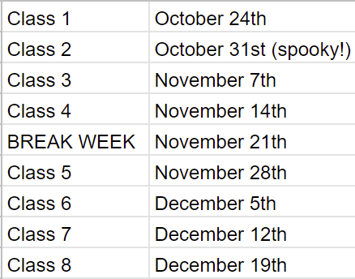
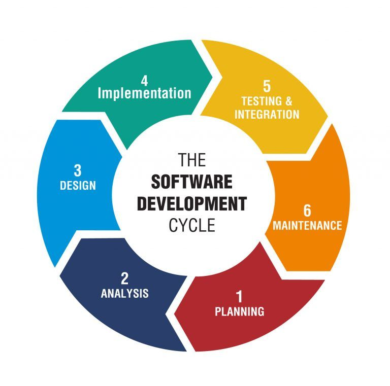
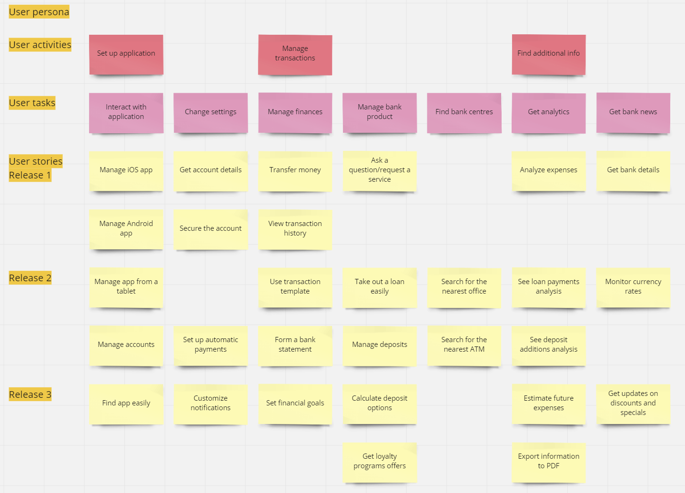
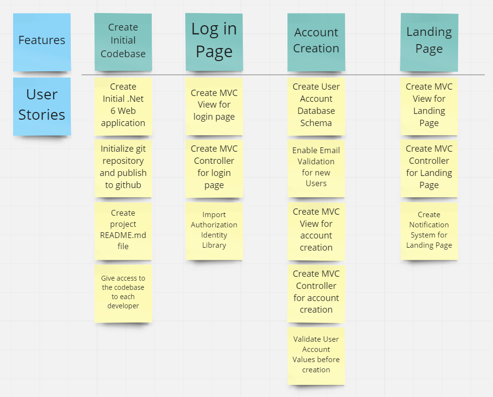

## Liftoff Kickoff! </br> #### Key topics for tonight <div style="text-align: left;"> - Liftoff Overview and Objectives </br> - Project Planning and User Stories </br> </div> --- ## Liftoff - Overview <div style="text-align: left; font-size: 1.75rem"> Liftoff is an 8 week course which focuses on preparing students to break into the software development industry. While we will be leveraging the <span style="color: cadetblue">technical skills</span> you gained in LC101, the main focus will be on learning <span style="color: cadetblue">project process</span>, and building <span style="color: cadetblue">career readiness</span> through a mixture of in-class and outside of class activities. </div> <p class="fragment" style="text-align: left; font-size: 1.75rem"> To assist in getting us there, we will be exploring topics around the needs of managing software development projects, collaboratively working with others, resume building, interviewing, coding challenges, and more. </p> --- ## Liftoff - Overview (cont) #### Lectures & Studio <div style="text-align: left; font-size: 1.75rem"> - When: Mondays 6 - 9 - Structure: - Lecture for approximately 30 minutes~ covering materials from the <a href="https://education.launchcode.org/liftoff/index.html">textbook</a> as well as other career prep topics. - Studio for the remainder of the time where you'll work alongside your group members and assigned TA mentor for project work, as well as in-class assignments. </div> --- ## Liftoff - Schedule  --- ## Liftoff - Defining Success <div style="text-align: left; font-size: 1.75rem"> - As a potential employer, there are three main things that I hope to see in the junior developers that I am looking to hire. - They have a solid grasp of the fundamentals of programming. - They are able to problem solve and learn new concepts. - They are able to work collaboratively with others. </div> --- ## Software Development Life Cycle  --- ## SDLC (cont) #### Definition <div style="text-align: left; font-size: 1.75rem"> The Software Development Life Cycle is a framework defining tasks performed at each step in the software development process. Within different SDLC <span style="color: cadetblue">methodologies</span>, the execution and timeline of these steps vary, but the order mostly stays the same. </div> --- ## SDLC (cont) #### Agile vs Waterfall <div style="text-align: left; font-size: 1.75rem"> - [Diagrams](https://www.google.com/search?q=agile+vs+waterfall+image) </div> <p class="fragment" style="text-align: left; font-size: 1.75rem"> In today's industry, it is more common to see jobs utilizing some variation of the Agile Methodology. </p> --- ## SDLC (cont) #### For this course <div style="text-align: left; font-size: 1.75rem"> We will be using a fairly minimalistic approach to the <span style="color: cadetblue">Agile Methodology</span> for this course. Agile works within short iterations (or sprints) to allow for pivots on the plan for the project as work gets completed and new insight into the direction of the project is uncovered. </div> <p class="fragment" style="text-align: left; font-size: 1.75rem"> Bonus -- Here's a list of popular methodologies you might see in the industry: <span style="color: cadetblue">Waterfall</span>, <span style="color: cadetblue">Scrum</span>, <span style="color: cadetblue">Lean</span>, <span style="color: cadetblue">Kanban</span>, <span style="color: cadetblue">DevOps</span>, and <span style="color: cadetblue">Extreme</span>. There are plenty of articles online comparing these different approaches should you be interested in learning more! </p> --- ## Planning - Story Mapping <div style="text-align: left; font-size: 1.75rem"> Identifying broad features and the breakdown of work that is associated with completing them. </div> --- ## Planning - Story Mapping (cont) <div style="display: flex;">   </div> --- ## Planning - Story Mapping (cont) #### Links - [Miro board](https://miro.com/templates/user-story-map/) --- ## Planning - Story Mapping (cont) #### Things to keep in mind - Think Abstractly. You will be able to expand on the more specific details later. - Think about the dependencies between these items. - Think about the <span style="color: cadetblue">relative effort</span> between these items. - Break down items that are too complex into smaller items. --- ## Planning - User Stories #### Definition <div style="text-align: left; font-size: 1.75rem"> A description of a new feature to be added to a software system, told from the perspective of a <span style="color: cadetblue">user</span>. </div> --- ## User Stories (cont) #### What do we use them for? <div style="text-align: left; font-size: 1.75rem"> We use them for planning and tracking our work. It is within the user stories that we flush out details of what ought to be completed. User stories capture the behavioral needs of the software via <span style="color: cadetblue">acceptance criteria</span>. </div> --- ## User Stories - vocab <span style="font-size: 1.75rem;"> - <span style="color: cadetblue">User Story</span> - A user story is an informal, general explanation of a software feature written from the perspective of the end user. Its purpose is to articulate how a software feature will provide value to the customer. - <span style="color: cadetblue">Acceptance Criteria</span> - A set of predefined requirements that must be met to mark a user story complete. - <span style="color: cadetblue">Story Points</span> - A unit of measure for expressing an estimate of the overall effort that will be required to fully implement a product backlog item or any other piece of work. </span> --- ## Project tracking tools <div style="text-align: left; font-size: 1.75rem"> <a href="https://trello.com/">Trello</a> is an online organizational tool that can be used to collaboratively track the state of tasks within our software projects. </div> <p class="fragment" style="text-align: left; font-size: 1.75rem"> As a bonus, if your team would like to instead utilize <a href="https://docs.github.com/en/issues/planning-and-tracking-with-projects/learning-about-projects/about-projects">Github Projects</a>, that is a more recently released project tracking tool with useful integrations with Github. </p> --- ## Project tracking - Demo #### Trello - <a href="https://blog.trello.com/how-to-scrum-and-trello-for-teams-at-work">How To Get Started With Scrum and Trello For Your Team At Work</a> - <a href="https://trello.com/b/ZqN99gGN/agile-sprint-board">Trello - Example sprint board</a> #### Github Projects - <a href="https://docs.github.com/en/issues/planning-and-tracking-with-projects/learning-about-projects/quickstart-for-projects">Github Projects Quick Start Guide</a> --- ## Project tracking #### User Story Example ```markdown **Description** As a user of the online chess application, I would like to receive an email after creating my account, so that my account can be verified and my email can reliably be used for other application needs going forward. ------- **Acceptance Criteria** * After a user attempts to register an account, an email is sent to their provided email address. * The registration email sent to the user contains a special link to the chess website. * Upon clicking that link, the user will be verified and able to sign into the site. ------- **Technical Notes** For this task we should be using the .Net identity library which we can info on [here](https://docs.microsoft.com/en-us/aspnet/core/security/authentication/identity?view=aspnetcore-6.0&tabs=visual-studio) ``` --- ## Project tracking #### User Story Template ```markdown **Description** As a User of this application, I would like to {description of what I'd like}, so that {description of what value it brings to me} ------- **Acceptance Criteria** * {Behaviorally driven descriptions of what the user wants} ------- **Technical Notes** Details that might be important to capture as a team member looking to complete this task. ``` --- ## Story Points <div style="text-align: left; font-size: 1.75rem"> Story Points are how we represent the complexity of the user stories we're looking to work on so that we can allocate an appropriate amount of work to the team. </div> --- ## Story Points - (cont) #### More details <div style="text-align: left; font-size: 1.75rem"> - Story points typically follow a modified version of the fibannaci sequence. (1, 2, 3, 5, 8 , 13, ...) - The meaning of individual points aren't universal. It's a team decision as to what a "1 point user story" is vs a "5 point user story". - As a place to start, I would try to identify how many points you think is reasonable to achieve in one week of work. From there, estimate your items relative to that timebox. </div> --- ## Story Points - resources - [Shaw Software - Planning Poker App](https://shawsoftware.net/PlanningPoker/) - [What is planning poker?](https://www.mountaingoatsoftware.com/agile/planning-poker) --- #### Project Planning - Concept Check! <div style="text-align: left; font-size: 1.75rem"> 1) What are some of the differences between Agile and Waterfall? 2) Why is project tracking important? What problems does it solve? 3) What are some of the traits of "good" acceptance criteria? What about "bad"? </div> --- ## Objectives for this week <div style="text-align: left; font-size: 1.75rem"> - Do some ice breakers! Become friends with your team members - Try to establish a time to meet outside of lecture nights (maybe use [when2meet](https://www.when2meet.com/) if needed) - Reach a group consensus on what project you'll be doing - Begin the story mapping process </div> --- ## Links to share <div style="text-align: left; font-size: 1.75rem"> - [Link to lecture slides](https://ryantheshaw.github.io/Unit2Slides/) - [The Agile Manifesto](https://agilemanifesto.org/) </div> --- ## Questions